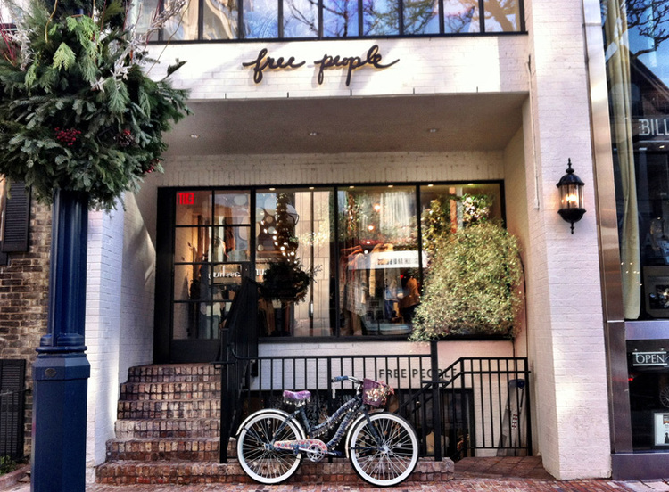

HIGH END STORES
Wear & Share wants men and women to have easy access and knowledge about different kinds of stores depending on price. We understand there times and situations where people want to buy stylish affordable clothes and glamorous high-end clothes. Here are some pictures, descriptions, and links for high end stores provided to your convenience so you can easily find clothes that fit your style.
Bloomingdale's is America's only nationwide, full-line, upscale department store and is widely recognized for its originality, innovation and fashion leadership. It is a contemporary and "of the moment" brand with an omnichannel approach.
 Topshop is a store that culturally defines street style movements. Topshop is the original champion of individuality. The brand’s diversity is demonstrated across trend-led clothing in a range of sizes from petite to tall and maternity, must-have accessories and an expansive, versatile denim offering which sees one pair of jeans sold every 10 seconds.
Topshop is a store that culturally defines street style movements. Topshop is the original champion of individuality. The brand’s diversity is demonstrated across trend-led clothing in a range of sizes from petite to tall and maternity, must-have accessories and an expansive, versatile denim offering which sees one pair of jeans sold every 10 seconds.Nordstrom is a leading fashion retailer offering high-quality clothing, shoes and accessories offers just the right pieces for women, men, and kids seeking timeless, classic items to complement and polish their wardrobe. Versatility, ease, and affordability are hallmarks of the Nordstrom collection.
Zara is a store that is involved in fast fashion meaning their designs come from the catwalk to quickly capture current fashion trends. They make high quality clothes that bring attractive and responsible fashion to customers.
The Urban Outfitters brand targets young adults with a merchandise mix of women's and men's fashion apparel, footwear, beauty and accessories, activewear and gear, and housewares, as well as music, primarily vinyl records and cassettes. Much of the merchandise is designed and produced by the company's wholesale division on multiple private labels.
Saks Fifth Avenue is a unique specialty store that would become synonymous with fashionable, gracious living. By offering the finest quality men's and women's fashions, as well as an extraordinary program of customer services, Saks Fifth Avenue has become the byword for taste and elegance.
Free People is a mature, contemporary brand. This allowed twenty-something women to appreciate the line of clothing that catered to their intelligence, creativity and individuality, while keeping with its great quality and affordability. In them, the aesthetic is immediately apparent, perfect for customers who want them to be apart of their lives.
Anthropologie's customer is a creative-minded woman, who wants to look like herself, not the masses. She has a sense of adventure about what she wears, and although fashion is important to her, she is too busy enjoying life to be governed by the latest trends. To her, Anthropologie is a portal of discovery—a brush with what could be. A place for her to lose—and find—herself. The styles include soft & delicate; boho chic; easy cool; elegant classic; and modern sporty.